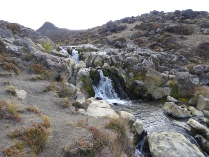
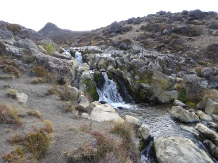

First time for Fiona but the second time for myself. Almost forty years ago it was my first ever exposure to New Zealand multi-day tramping. Back then we were young and fit, able to walk all day, have a beer at the local pub, drive all the way back to Wellington and go to work the following morning. Not this time. We drove from Wainuiomata to Whakapapa village where we stayed at the Skotel Alpine Resort. The pre-booked standard queen room was all we needed before and after the walk. March is not the busiest period in the skiing resort. It meant we did not have to wait in queues at the bar or restaurant. We had a couple of drinks and a nice meal in a very relaxing atmosphere. All in the name of getting ready for the hard work.
 

Day 01
We were not keen on going up the Devil's Staircase or on sliding down on scree (volcanic rock) and therefore we have opted for the anticlockwise approach. The day started for us following Round the Mountain Track towards Taranaki Falls. The 20-meter waterfall can be viewed either from the top or the bottom where it forms a rock-ringed pool. A very well photographed feature. Tama Lakes was our next destination. Both Lower and Upper Lakes occupy old explosion craters. The Upper Tama lake lies about 200 meters above the Lower Tama lake and we have decided to give it a miss. Instead, we continued with adventure. A small detour to Historic Waihohonu Hut and then the final destination. After securing our bunks we felt energetic enough to explore the surroundings. We were lucky to spot Whio / Blue Duck on the Ohinepango Stream. Fantastic day.
Day 02
The day started with morning tea and Tararua biscuits. Followed by a short walk on golden sand along a beautiful sea shore. After leaving the beach our next stopover was Cleopatra's Pools, a series of natural rock pools at the base of the Torrent River. Cold, slippery, and very refreshing. A chance to wash off the sea salt from the previous swims. It was a highlight of the day. Before reaching Torrent Bay we climbed a steep track leading to the waterfall. It was not our best idea. The day was very hot, the climb was very steep, we were not sure if it was a loop track or not so we did carry our packs, and the waterfall was rather dried and disappointing. We had a short rest at Torrent Bay wharf. From there the track went up and down through the bush to Bark Bay where we stayed for the second night.
Day 03
Another exciting day. From Bark Bay, we followed the bushy, windy, uphill track that lead us to Tonga Quarry
Campsite. Between 1900 and 1910 the granite rock was quarried here. The Nelson Cathedral steps were
extracted from here. After yet another swim we followed the track to Onetahuti Beach before reaching Awaroa
Lodge. We were hoping to stop at the lodge for a coffee or chai latte but the place looked very busy.
Instead, we walked down, to see the piece of beach we purchased a few years ago. Georges place,
someone described it as the pristine paradise of Awaroa.
Awaroa Hut is located not that far from the
southern end of the beach itself. The secrete of getting to the hut lies in the timing. If you time your
walk correctly and arrive at the beach at the low tide you will save yourself lots of uphill walking. In
our case, it was more on the luck side rather than the management side, but we did not have to go back on
the uphill track. The pleasant stroll along the water and across the small estuary, linked to the Awaroa
Inlet, took us right to the door step of the hut.
Day 04
Probably the longest and most tiring day on the track. After breakfast, we all were waiting for the tide to go out before we could cross the Awaroa Inlet. An arrival of early walkers from the other side of the inlet was a good indicator that it was safe to start our crossing. After less than 30 minutes of avoiding small pools of water, we left the inlet on went on to discover the views of Waiharakeke Bay and have a swim at Goat Bay. From here it was another uphill towards Totaranui Beach. We walked through the Totaranui Camping Area. The place was full of tents, caravans, and motor homes but had a toilet block. As we were not sure about the tides so we took the longer, inland route towards Anapai Bay. By the time we arrived at the Anapai Bay we were hot, tired in the need of a long swim. The next bay was Anatakapau Bay. From here we went over the hill towards the Whariwharangi Hut, leaving Separation Point on our left. The Whariwharangi Hut must be the oldest hut on NZ Great Walks. It is a historic farm homestead built in 1898 and located just a couple of minutes inland from Whariwharangi Bay. As only three walking couples stayed the night in the hut we all had our own rooms. A luxury indeed.